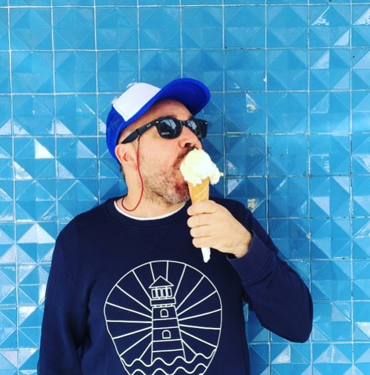

PABLO POMBO SANCHEZ
JUNIOR FULLSTACK DEVELOPER
CONTACTO
696309913
pablopombosanchez@gmail.com
Disponibilidad movilidad geografica
TECNOLOGIAS


Información personal
- Soy una persona dinámica y positiva, con gran capacidad para trabajar en equipo. He trabajado 15 años en el sector del comercio textil aunque ahora he decidido cambiar de sector y me estoy formando como full-stack developer, por lo cual manejo los lenguajes html, javascript, css, además de bases de datos. He trabajado tanto en multinacionales como en pequeñas empresas.
Experiencia laboral
TVG
- Ayudante de producción - Contrato de prácticas mar. 2006 - jun. 2006 · 4 mesesmar. 2006 - jun. 2006 · 4 meses Santiago de Compostela, Galicia / Galiza, EspañaSantiago de Compostela, Galicia / Galiza, España Ayudante de producción del programa Galicia Noticias. Gestión de equipos y recepción de noticias desde diferentes agencias de prensa vinculadas a la TVG. Producción del Programa Historias de Galicia, Producción del rodaje en set del programa en Las Minas de Oro de las Medulas.
H&M
- Dependiente sept. 2006 - jul. 2021 · 14 años 11 mesessept. 2006 - jul. 2021 · 14 años 11 meses Madrid, Comunidad de Madrid, EspañaMadrid, Comunidad de Madrid, España Sales Adviser, cobro en caja, colocación de ropa en diferentes puntos de la tienda, recepción de la ropa, puntualmente colaboraba con el departamento de Visual Merchandaiser y funciones de stock..
Formación académica
SOCRATECH
- Bootcamp de fullstack developer feb. 2022 - may. 2022 Santiago de Compostela. Trabajo en equipo para la realización de diferentes proyectos. Maquetación web con HTML,CSS, SASS, Bootstrao; front end con javascript, react, tyscript; backend con NodeJS y MySQL. Manejo de otras herramientas, Github, VS code
O RAIO VERDE
- Ciclo superior de Produciión Audiovisual sept. 2003 - jun. 2005 Santiago de Compostela. Sales Adviser, cobro en caja, colocación de ropa en diferentes puntos de la tienda, recepción de la ropa, puntualmente colaboraba con el departamento de Visual Merchandaiser y funciones de stock..
CENP
- Diplomatura en turismo sept. 1995 - jun. 2002 A Coruña. Sales Adviser, cobro en caja, colocación de ropa en diferentes puntos de la tienda, recepción de la ropa, puntualmente colaboraba con el departamento de Visual Merchandaiser y funciones de stock..